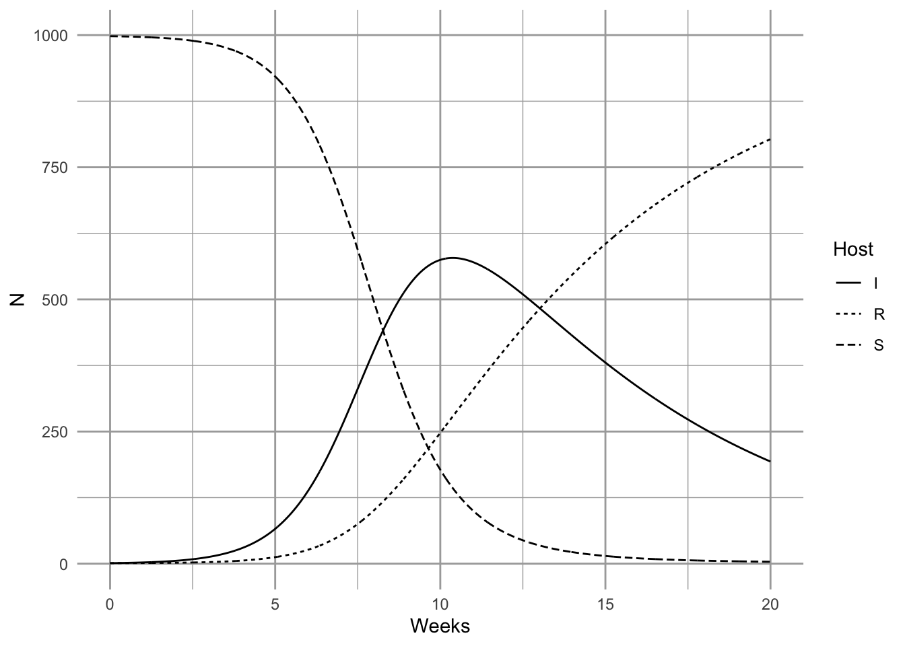
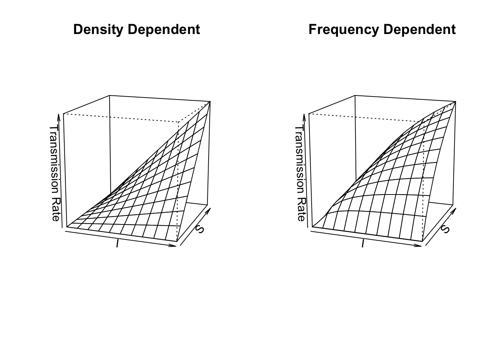
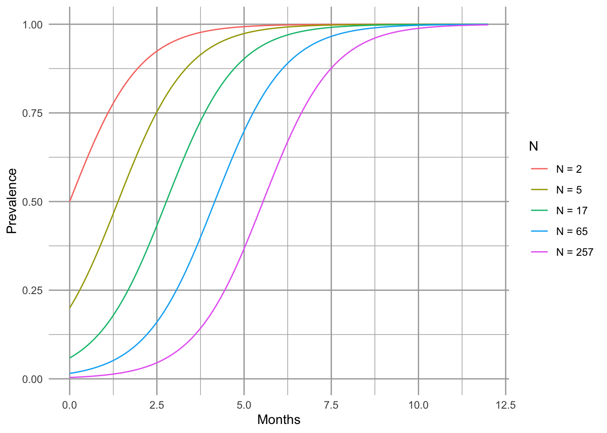
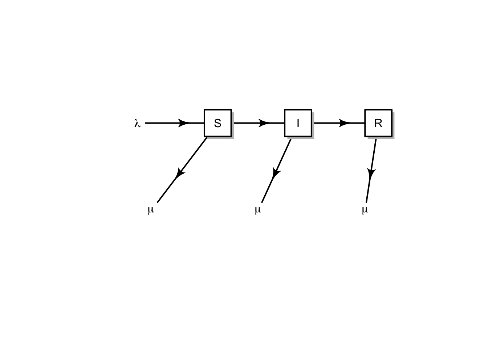
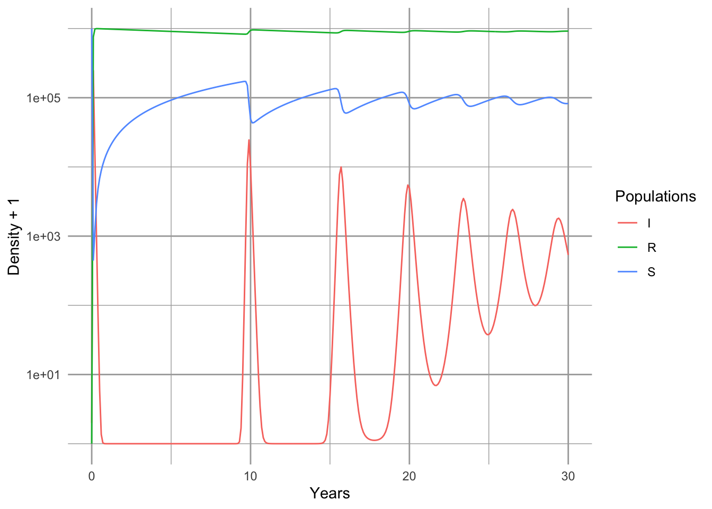
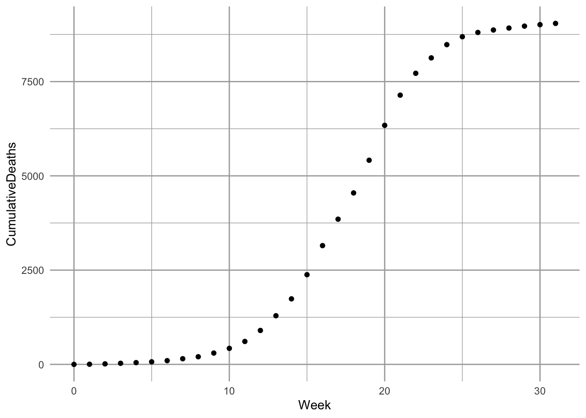
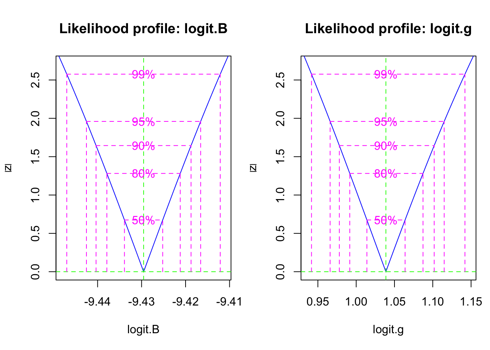
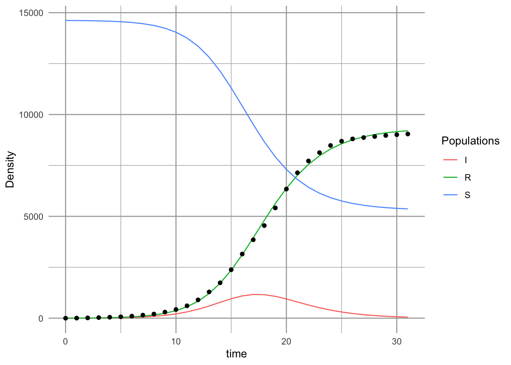

# Here we create the function for the simple SIR model.
SIRd <- function(t, y, p) {
{
S <- y[1]
I <- y[2]
R <- y[3]
}
with( as.list(c(y, p)), {
dS.dt <- -B*I*S
dI.dt <- B*I*S - g*I
dR.dt <- g*I
return( list(c(dS.dt, dI.dt, dR.dt)) )
} )
}12 Disease
Here we discuss epidemiological disease models. Pathogens cause diseases, and are typically defined as microorganisms (fungi, bacteria, and viruses) with some host specificity, and which undergo population growth within the host. The curious reader may want to consult Ellner and Guckenheimer (2006) and Bjornstad (2018).
I think, without tons of evidence, that one nice aspect of disease ecology and the use epidemiological models is that they have helped ecologists feel more comfortable with short term dynamics and also the importance of prediction. Human epidemiology is rightly obsessed with understanding the disease outbreak in front of us, whether it is the common cold, or SARS-CoV-2 and how to alter its course. It is even more interested in being able to predict the course of an outbreak. In contrast, ecology has often been more interested in asymptotic dynamics rather than short term, and more on understanding than prediction. There is a place for everything, and it is good to see the two having merged a bit.
Our simplest models of disease are funny, in that they don’t model pathogens (the enemy) at all. These famous models, by Kermack and McCormick (1927), keep track of different types of hosts, primarily those with and without disease:
- Susceptible hosts Individuals which are not infected, but could become infected,
- Infected hosts Individuals which are already infected, and
- Resistant hosts Individuals which are resistant to the disease, typically assumed to have built up an immunity through past exposure,
where \(N=S+I+R\). It is important to note that \(N\), \(S\), \(I\), and \(R\) are densities. That is, we track numbers of individuals in a fixed area. This is important because it has direct consequences for the spread, or transmission, of disease (McCallum et al. 2001).
Disease spreads from infected individuals to susceptible individuals. The rate depends to some extent on the number or alternatively, on the fraction of the population that is infected. Resistant individuals are not typically considered vectors of the pathogens, and so increased abundance of resistant individuals slow the transmission rate by diluting the other two groups.
12.1 Closed epidemics
A good starting place is the simplest SIR models, that for a closed epidemic. By this we mean that births, deaths, and migration are essentially zero, such that we have a fixed population size. This is a reasonable assumption over relatively short time intervals, which is fine if we are interested in the progression of a single disease outbreak. \[ \begin{aligned} \frac{d S}{d t} &= -\beta IS\\ \frac{d I}{d t} &=\beta IS - \gamma I\\ \frac{d R}{d t} &= \gamma I \end{aligned} \tag{12.1}\]
12.1.1 Density-dependent transmission
In Equation 12.1, the total transmission rate depends on the density of susceptible hosts. The transmission coefficient, \(\beta\), describes the instantaneous rate at which the number of infected hosts increases per infected individual. It is directly analogous to the attack rate of type I prey-dependent models. Recall that it is based on the law of mass action, borrowed from physics and chemistry. It assumes that the rate at which events occur (new infections) is due to complete and random mixing of the reactants (\(S,\,I\)), and the rate at which the reactants collide and react can be described by a single constant, \(\beta\). As density of either type of molecule increases, so too does the rate of interaction. In prey-dependent predation, we referred to \(aN\) as a linear functional response; here we refer to \(\beta S\) as the density-dependent transmission function. The transmission rate is the instantaneous rate for the number of new infections or cases per unit time (McCallum et al. 2001).
Resistant individuals might be resistant for one of two reasons. They may die, or they may develop immunities. In either case, we assume they cannot catch the disease again, nor spread the disease. As this model assumses a constant population size, we continue to count all \(R\) individuals, regardless of whether they become immune or die.
The individuals become resistant to this disease at the constant per capita rate, \(\gamma\). The rate \(\gamma\) is also the inverse of the mean residence time, or duration, of the disease1.
1 This is an interesting phenomenon of exponential processes—the mean time associated with the process is equal to the inverse of the rate. This is analogous to turnover time or residence time for a molecule of water in a well-mixed lake.
Disease incidence is the number of new infections or cases occurring over a defined time interval. This definition makes incidence a discrete-time version of transmission rate. Disease prevalence is the fraction of the population that is infected \(I/N\).
A common question in disease ecology is to ask under what conditions will an outbreak occur. Another way of asking that is to ask what conditions cause \(\dot{I}>0\). We can set \(dI/dt > 0\) and solve for something interesting about what is required for an outbreak to occur. \[ \begin{aligned} 0 & < \beta IS - \gamma I\notag\\ \frac{\gamma}{\beta} &< S \end{aligned} \tag{12.2}\] What does this tell us? First, because we could divide through by \(I\), it means that if no one is infected, then an outbreak can’t happen—it is the usual, but typically unstable equilibrium at 0. Second, it tells us that an outbreak will occur if the absolute density of susceptibles2 is greater than \(\gamma / \beta\). If we consider the pre-outbreak situation where \(S \approx N\), then simply making the population size (and density) low enough can halt the spread of disease. This is why outbreaks tend to occur in high density populations, such as agricultural hosts (e.g., cattle), or historically in urban human populations, or in schools.
2 \(S\) is the absolute density, whereas \(S/N\) is the relative density.
Vaccinations are a way to reduce \(S\) without reducing \(N\). If a sufficient number of individuals in the population are vaccinated to reduce \(S\) below \(\gamma / \beta\), this tends to protect the unvaccinated individuals as well.
Another common representation of this is called the force of infection or basic reproductive rate of the disease. If we assume that in a large population \(S \approx N\), then rearranging Equation 12.2 gives us \[ R_0=\frac{\beta N}{\gamma} \tag{12.3}\] where \(R_0\) is the basic reproductive rate of the disease. If \(R_0 > 1\), then an outbreak (i.e., disease growth) is plausible. Try not to confuse density of resistant hosts, \(R\), with the basic reproductive rate of the disease, \(R_0\). This is analogous to the finite rate of increase of a population where \(\lambda>1\).
Here we model the outbreak of a nonlethal disease (e.g., a new cold virus in winter at university). We assume that the disease is neither life-threatening, and nor is anyone resistant, thus \(R=0\). We can investigate the SIR model by pretending that, as is often the case, we begin with a largely uninfected population and \(t=0\), so \(I_0=1\) and \(S_0\approx N\). We first set parameters. Let’s assume that a cold lasts about a week - that is the duration of the disease, which is \(1/\gamma\). This assumes that the duration ot he cold symptoms are exponentially distributed.
parms <- c(B=.001, g=1/7)
N <- 10^3; I <- R <- 1; S <- N - I - R
y <- c(S=S, I=I, R=R)
# Next we integrate for 20 weeks.
weeks <- seq(0, 20, by=0.01)
out1 <- data.frame( ode(y, weeks, SIRd, parms) )
out2 <- pivot_longer(out1, cols=S:R, names_to="Host", values_to="N")
ggplot(out2, aes(time, N, linetype=Host)) + geom_line() + labs(x="Weeks")
It is important at this point to reiterate a point we made above—these conclusions apply when S, I, and R are densities (McCallum et al. 2001). If you increase population size but also the area associated with the population, then you have not changed density. If population size only increases, but density is constant, then interaction frequency does not increase. Some populations may increase in density as they increase is size, but some may not. Mass action dynamics are the same as type I functional response as predators—there is a constant linear increase in per capita infection rate as the number of susceptible hosts increases.
12.1.2 Frequency-dependent transmission
In addition to density-dependent transmission, investigators have used other forms of density dependence. One the most common is typically known as frequency–dependent transmission, where transmission depends on the prevalence, or the frequency of infecteds in the population, \(I/N\). \[ \frac{d S}{d t} = - \beta \frac{SI}{N} \tag{12.4}\]
\[ \frac{d I}{d t} = \beta \frac{SI}{N} - \gamma I \tag{12.5}\]
\[ \frac{d R}{d t} = \gamma I. \tag{12.6}\]
Here we create the function for this system of ODEs.
SIRf <- function(t, y, p) {
{
S <- y[1]
I <- y[2]
R <- y[3]
N <- S + I + R
}
with( as.list(c(y,p)), {
dS.dt <- -B*I*S/N
dI.dt <- B*I*S/N - g*I
dR.dt <- g*I
return( list(c(dS.dt, dI.dt, dR.dt)) )
} )
}The proper form of the transmission function depends on the mode of transmission (McCallum et al. 2001). Imagine two people are on an elevator, one sick (infected), and one healthy but susceptible, and then the sick individual sneezes (Ellner and Guckenheimer 2006). This results in a particular probability, \(\beta\), that the susceptible individual gets infected. Now imagine resistant individuals get on the elevator—should adding resistant individuals change the probability that the susceptible individual gets infected? Note what has and has not changed. First, with the addition of a resistant individual, \(N\) has increased, and prevalence, \(I/N\), has decreased. However, the densities of \(I\) and \(S\) remain the same (1 per elevator). What might happen? There are at least two possible outcomes:
- If sufficient amounts of the virus spread evenly throughout the elevator, adding a resistant individual does not change the probability of the susceptible becoming sick, and the rate of spread will remain dependent on the densities of \(I\) and \(S\)—the rate will not vary with declining prevalence.
- If only the immediate neighbor gets exposed to the pathogen, then the probability that the neighbor is susceptible declines with increasing \(R\), and thus the rate of spread will decline with declining prevalence.
It is fairly easy to imagine different scenarios, and it is very important to justify the form of the function. Density- and frequency-dependent transmission are the two most common caricatures.
R <- 0; S <- I <- 1000; Ss <- Is <- seq(1, S, length=11); N <- S+I+R
betaD <- 0.1; betaF <- betaD*N
# sapply will calculate the transmission functions for each combination of
# the values of $I$ and $S$.
mat1 <- sapply(Is, function(i) betaD * i * Ss)
mat2 <- sapply(Is, function(i) betaF * i * Ss / (i + Ss + R) )
# Now we plot these matrices.
{
layout(matrix(1:2, nr=1))
persp(mat1, theta=20, phi=15, r=10, zlim=c(0,betaD*S*I),
main="Density Dependent",
xlab="I", ylab="S", zlab="Transmission Rate")
persp(mat2, theta=20, phi=15, r=10, zlim=c(0,betaF*S*I/N),
main="Frequency Dependent",
xlab="I", ylab="S", zlab="Transmission Rate")
}
What does frequency–dependent transmission imply about dynamics? Let’s solve for \(dI / dt > 0\). \[ \begin{aligned} 0 &< \beta \frac{SI}{N} - \gamma I \notag\\ \gamma &< \beta \frac{S}{N}. \end{aligned} \tag{12.7}\] As we did above, let’s consider the pre-outbreak situation where \(S \approx N\), so that \(S/N \approx 1\). In that case, the basic reproductive rate is \(R_0=\beta/\gamma\), which is independent of \(N\). An outbreak will occur as long as \(\beta > \gamma\), regardless of population density. This is in direct contrast to the density-dependent transmission model (Equation 12.4, Equation 12.5), where outbreak could be prevented if we simply reduce the population, \(N\), to a sufficently low density. Both modes of transmission are observed in human and non-human populations, so it is important to understand how the disease is spread in order to predict its dynamics.
Another interesting phenomenon with frequency–dependent transmission is that prevalence (\(I/N\)) can decline with increasing population size (Fig. Figure 12.1). Two phenomena contribute to this pattern. First, outbreak in a completely susceptible population typically begins with a single individual, and so initial prevalence is always \(I/N=1/N\). Second, as a consequence of this, the transmission rate is lower in larger populations because \(\beta SI/N\) is small. As a consequence, prevalence remains low for a relatively long time. In a seasonal population, most individuals in large populations remain uninfected after four months. Depending upon the organism, this could be long enough to reproduce. In contrast, a density–dependent model typically shows the opposite, pattern, with more rapid, extreme outbreaks and greater prevalence in more dense populations (Fig. Figure 12.1).
SIR dynamics with frequency–dependent transmission (Fig. Figure 12.1).
Here we demonstrate that prevalence can vary with population size (e.g., a smut on plant (Antonovics and Alexander 1992)). Let us assume that resistance cannot be acquired, so \(\gamma=0\), and \(R = 0\). We can investigate the SIR model by pretending that, as is often the case, we begin with a largely uninfected population and \(t=0\), so \(I_0=1\) and \(S_0\approx N\). We first set parameters.
S <- 4^(0:4); I <- 1; parmsf <- c(B=1, g=0)We next integrate for 12 months.
Months <- seq(0, 12, by=0.1)
outf <- sapply(S, function(s) {out <- ode(c(s,I,R), Months, SIRf, parmsf)
out[,3]/apply(out[,2:4], 1, sum) } )
outf.t <- cbind.data.frame(Months=Months, Transmission="Frequency", outf)
names(outf.t)[3:7] <- paste("N =", S+1)
outf.tl <- pivot_longer(outf.t, cols=3:7, names_to="N", values_to="Prevalence")
outf.tl$N <- factor(outf.tl$N, levels = paste("N =", S+1) )
#TR <- sapply(S, function(s) {R <- s/2; parmsf["B"]*s*I/(s+I+R)})Last, we make the figure.
ggplot(outf.tl, aes(Months, Prevalence, colour=N)) + geom_line() 
12.2 Open epidemics
The above model assumes a constant population size. Here expand this to include population growth and death unrelated to disease (Fig. Figure 12.2).
A <- matrix(NA, nrow=7, ncol=7)
a <- matrix(c( 2,1, 3,2, 4,3, 5,2, 6,3, 7,4), ncol=2, byrow=TRUE)
A[a] <- 1
plotmat(A, pos=c(4,3), box.type=c('none', 'square','square','square','none','none','none'), curve=0,
arr.pos=.6, segment.from=.1, segment.to=.9,
relsize=.8, dtext=NA, box.size=.05,
name=c(expression(lambda), 'S', 'I', 'R',
expression(mu),
expression(mu),
expression(mu))) 
Here we get specific, and add births, \(b\), potentially by all types, sick or not (\(S+I+R\)), and we assume that the newborns are susceptible only. We also add a mortality term to each group (\(\mu S,\,\mu I,\,\mu R\)). \[ \begin{aligned} \frac{d S}{d t} &= b \left( S+I+R \right) - \beta SI - \mu S\\ \frac{d I}{d t} &=\beta SI - \gamma I - \mu I\\ \frac{d R}{d t} &= \gamma I - \mu R \end{aligned} \tag{12.8}\] Note that the births add only to the susceptible group, whereas density independent mortality subtracts from each group.
Disease model with population growth Here we create the function for the system of ODE’s in Equation 12.8.
SIRmod <- function(t, y, p) {
S <- y[1]; I <- y[2]; R <- y[3]; N <- sum(y)
with( as.list(p), {
dS.dt <- b*N - B*I*S/N^z - mu*S
dI.dt <- B*I*S/N^z - g*I - mu*I
dR.dt <- g*I - mu*R
return( list(c(dS.dt, dI.dt, dR.dt)) )
} )
}Let’s start to work with this model—that frequently means making simplifying assumptions. We might start by assuming that if infected and resistant individuals can contribute to offspring, then the disease is relatively benign. Therefore, we can assume that mortality is the same for all groups (\(\mu_i= \mu\)). We’ll also assume (again) a constant population size. This means that birth rate equals mortality or \(b=\mu\).
We add additional complexity by allowing transmission to be partially frequency dependent. We introduce a scaling parameter \(z\), where transmission is \[\beta I \frac{S}{N^z}\] so that when \(z=0\) we have pure density dependence, and \(z=1\) is pure frequency dependence.
Note that if we let \(z,\, b,\, \mu =0\), the we have the simplest SIR model with which we bagn the chapter.
Now imagine a large city, with say, a million people. Let’s then assume that we start of with a population of virtually all susceptible people, but we introduce a single infected person.
N <- 10^6
R <- 0; I <- 1; S <- N - I - RLet us further pretend that the disease runs its course over about 10–14 days. Recall that \(\gamma\) (gamma) is the inverse of the duration of the disease.
g <- 1/(13/365)Given a constant population size and exponential growth, then the average life span is the inverse of the birth rate. Let us pretend that the average life span is 50 years.
b <- 1/50For this model, the force of infection turns out to be \(R_0 = 1 + 1 / \left(b\, \alpha\right)\), where \(\alpha\) is the average age at onset of the disease (Ellner and Guckenheimer 2006). We can therefore estimate \(\beta\) from all the other parameters, including population size, average life span, average age at onset, and the average duration of the disease. For instance, imagine that we have a disease of children, where the average onset of disease is 5,y, so we have
age <- 5
R0 <- 1 + 1/(b*age)so \(\beta\) becomes
B <- R0 * (g + b) / NFinally, we can integrate the population and its states. We create a named vector of parameters, and decide on the time interval.
parms <- c(B = B, g = g, b = b, mu=b, z=0)
years <- seq(0,30, by=.1)It turns out that because of the relatively extreme dynamics (Fig. Figure 12.3), we want to tell the ODE solver to take baby steps, so as to properly capture the dynamics—we use the hmax argument to make sure that the maximum step it takes is relatively small.
out <- data.frame(ode(c(S=S,I=I,R=R), years, SIRmod, parms, hmax=.01))
SIRbd.out <- pivot_longer(out, cols=2:4, names_to="Populations", values_to="Density")
ggplot(SIRbd.out, aes(time, Density+1, colour=Populations)) +
geom_line() + scale_y_log10() + xlab('Years')
Note that the population quickly becomes resistant (Fig. Figure 12.3). Note also that we have oscillations, albeit damped oscillations. An analytical treatment of the model, including eigenanalysis of the Jacobian matrix could show us precisely the predicted periodicity (Ellner and Guckenheimer 2006). It depends on the the age at onset, and the duration of the disease.
12.3 Modeling data from Bombay
Here we try our hand at fitting the SIR model to some data. Kermack and McCormick (1927) provided data on the number of plague deaths per week in Bombay3 in 1905–06. We first enter them and look at them.4
3 Bombay is the coastal city now known as Mumbai, and is the capital of Maharashtra; it is one of the largest cities in the world.
4 Data provided kindly by S.P. Ellner
data(ross)
qplot(x=Week, y=CumulativeDeaths, data=ross)
As with most such enterprises, we wish we knew far more than we do about the which depends on fleas, rodents, humans, and Yersinia pestis on which the dynamics depend. To squeeze this real-life scenario into a model with a small number of parameters requires a few assumptions.
%We begin by assuming, and Kermack and Mckendrick did, that mortality from bubonic plague, in Bombay, in 1905, was quite high, close to 90%. Next, we realize that the only data we have is deaths. Given, however, that the mortality is very high, we might approximate the number of infections by saying that Deaths = 0.9 \(\times\) Infections.
A good starting place is a simple SIR model for a population of constant size Equation 12.1.
12.3.1 Optimization
We next want to let R find the most accurate estimates of our model parameters \(\beta,\,\gamma\). The best and most accessible reference for this is Bolker (2008). Please read the Appendix (for the moment, available on request) for more explanation regarding optimization and objective functions.
Now we create the objective function. An objective function compares a model to data, and calculates a measure of fit (e.g., residual sum of squares or likelihood). Our objective function will calculate the likelihood5 of particular values for SIR model parameters. These parameters include \(\gamma\) and \(\beta\) of the SIR model. We will also estimate \(I_0\), initial size of the infected population at our \(t=0\). A survey of easily accessed census data suggests the population at the time was in the neighborhood of \(\sim 9.5 \times 10^5\) individuals. We also might assume that \(I_0\) would be a very small number, perhaps \(\sim 1\) in principle, so we will use that. We would really like to estimate \(N\) and \(I_0\), but we’ll save that for another day.
5 Likelihood is proportional the probability of data, given a particular model and its parameters.
Some details about our objective function:
- Arguments are transformed parameters (this allows the optimizer to work on the logit6 and log scales).
- Transformed parameters are backtransformed to the scale of the model.
- Parameters are used to integrate the ODEs using
ode, retaining only the resistant (i.e. dead) group (the fourth column of the output); this provides the predicted values given the parameters and the time from onset, and the standard deviation of the residuals around the predicted values. - It returns the negative log-likelihood of the data, given the parameter values.
6 A logit is the transformation of a proportion which will linearize the logistic curve, logit (p) = \(\log ( p/(1-p) )\).
Here is our objective function. Note that its last value is the negative sum of the log-probabilities of the data (given a particular realization of the model).
sirLL=function(logit.B, logit.g, log.I0, log.N) {
#parameters
parms <- c(B=plogis(logit.B), g=plogis(logit.g));
# starting point
x0 <- c(S=exp(log.N), I=exp(log.I0), R=0)
# solve
Rs <- ode(y=x0, ross$Week, SIRd, parms, hmax=.01)[,4]
# calculate the root mean squared error of the fit
SD <- sqrt( sum( (ross$CumulativeDeaths - Rs)^2)/length(ross$Week) )
# calculate the negative loglikelihood
-sum(dnorm(ross$CumulativeDeaths, mean=Rs, sd=SD, log=TRUE))
}We then use this function, sirLL, to find the likelihood of the best parameters. The mle2 function in the bbmle library7 will minimize the negative log-likelihood generated by sirLL, and return values for the parameters of interest.
7 You will need to install the bbmle package, unless someone has already done this for the computer you are using.
We will use a robust, but relatively slow method called Nelder-Mead (it is the default). We supply mle2 with the objective function and a list of initial parameter values. This can take a few minutes, but that’s okay.
library(bbmle)
# we used fixed to fix N and I0 to particular values and not estimate them.
fit <- mle2(sirLL, start=list(logit.B=qlogis(1e-5), logit.g=qlogis(.2),
log.N=log(9.5e5), log.I0=0),
method="Nelder-Mead") Let’s look at a summary of the fit, as far as it went. Here is what I get.
summary(fit)Maximum likelihood estimation
Call:
mle2(minuslogl = sirLL, start = list(logit.B = qlogis(1e-05),
logit.g = qlogis(0.2), log.N = log(950000), log.I0 = 0),
method = "Nelder-Mead")
Coefficients:
Estimate Std. Error z value Pr(z)
logit.B -9.4310986 0.0083175 -1133.886 < 2.2e-16 ***
logit.g 1.0274890 0.0102931 99.823 < 2.2e-16 ***
log.I0 1.0960841 0.0391551 27.993 < 2.2e-16 ***
log.N 9.5900667 0.0081991 1169.651 < 2.2e-16 ***
---
Signif. codes: 0 '***' 0.001 '**' 0.01 '*' 0.05 '.' 0.1 ' ' 1
-2 log L: 388.0868 This gets us some parameter estimates, but they are probably not accurate because the computer couldn’t settle on what it thought was a stable solution (convergence failure. This occurs frequently when we ask the computer to estimate too many, often correlated, parameters for a given data set. Therefore, we have to make assumptions regarding selected parameters. Let us assume for the time being that the two variable estimates are correct, that the population size of the vulnerable population was approximately exp(rround(coef(fit)[3],1)) and the number of infections at the onset of the outbreak was 9.6. We will hold these constant and ask R to refit the model, using the default method.
fit2 <- mle2(sirLL, start=as.list(coef(fit)[1:2]),
fixed=list(log.N=coef(fit)[4], log.I0=coef(fit)[3]), method="BFGS")
summary(fit2)Next we want to find confidence intervals for \(\beta\) and \(\gamma\). This can take more than several minutes, but it results in a likelihood profile for these parameters, which show the confidence regions for these parameters (Fig. Figure 12.5).
pr2 <- profile(fit2)par(mar=c(5,4,4,1))
plot(pr2)
Last we get to plot our curve with the data. We first backtransform the coefficients of the objective function.
p <- as.numeric(c(plogis(coef(fit)[1:2]),
exp(coef(fit)[3:4])) ); p[1] 8.018462e-05 7.364288e-01 2.992425e+00 1.461884e+04We then get ready to integrate the disease dynamics over this time period.
inits <- c(S = p[4], I=p[3], R=0)
params <- c(B=p[1], g=p[2])
outdf <- data.frame( ode(inits, ross$Week, SIRd, params) )Last, we plot the model and the data (Fig. \(\ref{fig:sir2}\)).
sir.Bombay <- pivot_longer(data=outdf, 2:4, names_to="Populations", values_to="Density")
ggplot(sir.Bombay, aes(time, Density, colour=Populations)) + geom_line() +
geom_point(data=ross,
mapping=aes(x=Week, y=CumulativeDeaths),
inherit.aes=FALSE )
# inherit.aes=FALSE tells geom_point not color by "Populations" So, what does this mean (Fig. Figure 12.4? We might check what these values mean, against what we know about the reality. Our model predicts that logit of \(\gamma\) was a confidence interval,
(CIs <- confint(pr2)) 2.5 % 97.5 %
logit.B -9.4425402 -9.416570
logit.g 0.9659977 1.114912This corresponds to a confidence interval for \(\gamma\) of
(gs <- as.numeric(plogis(CIs[2,]) ))[1] 0.7243210 0.7530437Recall that the duration of the disease in the host is \(1/\gamma\). Therefore, our model predicts a confidence interval for the duration (in days) of
7*1/gs[1] 9.664223 9.295610Thus, based on this analysis, the duration of the disease is about 9.5 days. This seems to agree with what we know about the biology of the Bubonic plague. Its duration, in a human host, is typically thought to last 4–10 days.